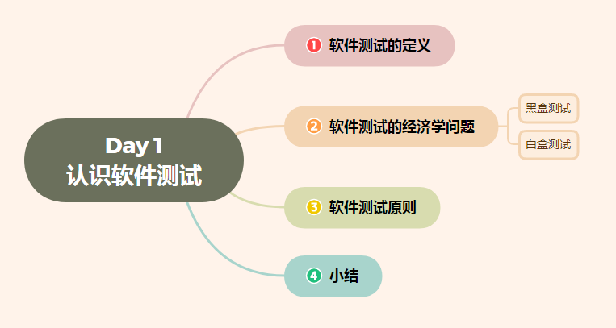

Day 1 认识软件测试
Day 1 认识软件测试——（软件测试定义、目的、原则）
[TOC]

所谓软件测试，就是一个过程或一系列过程，用来确定计算机代码完成了其 …
Day 1 认识软件测试——（软件测试定义、目的、原则）
[TOC]
所谓软件测试，就是一个过程或一系列过程，用来确定计算机代码完成了其应该完成的归纳，不执行其不该有的操作。
软件应当是可预测且稳定的，不会给用户带来意外惊奇。
在本文中我将介绍软件测试，来认识何为软件测试、软件测试定义是什么、经济问题、软件测试原则。
软件测试的定义
软件测试工作执行的差，其中一个主要原因在于大多数的程序员一开始就把“测试”这个术语的定义搞错了，他们可能会认为：
- “软件测试就是证明软件不存在错误的过程。”
- “软件测试的目的在于证明软件能够正确完成其预定的功能。”
- “软件测试就是建立一个‘软件做了其应该做的’信心的过程。”
这些定义都是本末倒置的。
每当测试一个程序时，总是想为程序增加一些价值。通过测试来增加程序的价值，是指测试提高了程序的可靠性或质量。提高了程序的可靠性，是指找出并最终修改了程序的错误。因此不要只是为了证明程序能够正确运行而去测试程序；相反，应该一开始就假设程序中隐藏着错误（这种假设对于几乎所有的程序都成立），然后测试程序，发现尽可能多的错误。那么，对于测试，更为合适的定义应该是
“测试是为发现错误而执行程序的过程”。
虽然这看起来就像是个的文字游戏，但确实有重要的区别。理解软件测试的真正定义，会对成功地进行软件测试有很大的影响。
软件测试的目的
是想以最少的人力，物力和时间找出软件中潜在的各种错误与缺陷，通过修正各种错误和缺陷提高软件质量，回避软件发布后由于潜在的软件缺陷和错误造成的隐患以及带来的商业风险。
这里也和软件测试经济问题对应
注意:不要和软件测试的定义混淆
PS：站在一名测试工程师的角度软件测试的目的是：
1、提高软件质量
2、保证软件安全
3、降低软件开发成本
4、降低企业风险
5、提高用户体验感
面试简述：我会站在用户的角度和专业测试的角度进行测试，在提高用户体验的同时，提高软件质量、保证软件安全、降低软件的开发成本和风险。【注：该部分会在面试知识+经验集锦中详细说明】
软件测试的经济学问题
给出了软件测试的适当定义之后，下一步就是确定软件测试是否能够发现“所有”的错误。我们将证明答案是否定的，即使是规模很小的程序。一般说来，要发现程序中的所有错误也是不切实际的，常常也是不可能的。这个基本的问题反过来暗示出软件测试的经济学问题、测试人员对被测软件的期望，以及测试用例的设计方式。
为了应对测试经济学的挑战，应该在开始测试之前建立某些策略。黑盒测试和白盒测试是两种最普遍的策略，我们将在下面两节中讨论
黑盒测试
黑盒测试是一种重要的测试策略，又称为数据驱动的测试或输入/输出驱动的测试。使用这种测试方法时，将程序视为一个黑盒子。测试目标与程序的内部机制和结构完全无关，而是将重点集中放在发现程序不按其规范正确运行的环境条件。
【黑盒测试的定义】
白盒测试
白盒测试又称结构测试、透明盒测试、逻辑驱动测试或基于代码的测试。白盒指的打开盒子，去研究里面的源代码和程序结果。
【白盒测试的定义】
软件测试原则
既然软件测试的定义是寻找软件的错误和缺陷,从而来评估和提高软件质量, 那么软件进行测试时必须要遵一定的原则:
| 1 | 测试用例中一个必需部分是对预期输出或结果进行定义 |
|---|---|
| 2 | 程序员应避免测试自己编写的程序 |
| 3 | 编写软件的组织不应当测试自已编写的软件 |
| 4 | 应当彻底检查每个测试的执行结果 |
| 5 | 测试用例的编写不仅应当根据有效和预料到的输入情况，而且也应当根据无效和未预料到的输入情况 |
| 6 | 检查程序是否“未做其应该做的”仅是测试的一半，测试的另一半是检查程是否“做了其不应该做的” |
| 7 | 应避免测试用例用后即弃，除非软件本身就是个一次性的软件 |
| 8 | 计划测试工作时不应默许假定不会发现错误 |
| 9 | 程序某部分存在更多错误的可能性，与该部分已发现错误的数量成正比 |
| 10 | 软件测试是一项极富创造性，极具智力的挑战性的工作 |
| 11 | 一切测试要追溯到用户的需求 |
| 12 | 应该把“尽早测试和不断测试”作为测试人员的座右铭 |
| 13 | pareto原则(二八原则):80%的错误,发生在20%的模块中 |
| 14 | 穷举测试是不可能的 |
| 15 | 第三方测试会更客观 |
| 16 | 测试用例是设计出来的, 不是写出来的 |
| 17 | 不可将测试用例置之度外，排除随意性 |
| 18 | 测试贯穿于整个生命周期 |
| 19 | 对发现错误较多的程序段，应进行更深入的测试。 |
| 20 | 要妥善的保存一切文档,便于后期进行复用 |
【需要理解记住】
原则一:测试用例中一个必须部分是对预期输出或结果进行定义
这个原则是软件开发中经常犯的错误之一。如果某个测试用例的预期结果事先没有得到定义，由于“所见即所想”的存在，某个似是而非、实际上是错误的结果可能会被解释成正确的结果。换句话说，尽管“软件测试是破坏性的”得定义是合理的，但在人们潜意识里面还是希望看到正确的结果。克服这一倾向的方法，就是通过事先精确地定义程序输出的结果。一个测试用例包括两个部分：
1）对程序输入数据的描述
2）对程序在上述输入数据下的正确输出结果的精确描述。
原则二：程序员应当避免测试自己编写的程序
自己在检查自己所写的程序很难跳脱开自己的思维方式，在心理上很有可能下意识的阻止自己找出程序的错误来。另外，由于程序员错误的理解了疑难定义或者规范导致程序出现错误，在这种情况下，程序员很可能带着同样的误解来测试自己的程序。
原则三：编写软件的组织不应当测试自己编写的软件
这个原则与原则二类似，在大多数的情况下，主要是根据给定的时间，特定成本范围内开发软件的能力来衡量编程组织或项目经理。度量时间和成本目标比较容易，而定量的衡量软件的可靠性则及其困难。即便是合理规划和实施的测试过程，也可能是被认为降低了完成进度和成本目标的可能性，因此编程组织难以可挂不能的测试自己的软件。更经济的方法是由客观的第三方来测试。
原则四：应当彻底检查每个测试的执行结果
这个原则是最显而易见的原则，即便有的错误明确的输出清单里出现，但还是有可能没有发现这个错误。在后续的测试中发现的错误，往往是前面测试遗漏的。
原则五：测试用例的编写不仅应当根据有效和预料到的输入情况，而且也应当根据无效和未预料到的输入情况。
在软件测试中，有个很自然的倾向，即将重点集中在有效和预期的情况上，而忽略了无效和未预料到的输入情况。而软件产品中突然暴露出的许多问题往往是以某些新的或未预料的值来运行时发现的。因此针对这些为预料到的值和无效输入的情况的测试用例似乎比那些针对有效输入情况的那些测试用例更能发现问题。
原则六：检查程序是否“未做其应该做的”仅是测试的一半，测试的另一半是检查程序是否“做了不应该做的”
设计测试用例的时候应该全面考虑程序方方面面，不希望程序有负作用。
原则七：应避免测试用例用后即弃，除非软件本身就是一个一次性的软件
这个问题在采用交互式系统来测试软件时最常见。如果我们精心设计的测试用例在测试结束后就消失，当软件重新需要测试，又必须重新设计测试用例，由于重新设计测试用例费时费力，人们往往避免这么做。如果程序更改导致程序某个先前可以执行的部分发生了故障，这个故障往往是不会被发现的。保留测试用例，当程序其他部件发生了变更后重新执行，这就是所谓的“回归测试”
原则八：计划测试工作时不应该默许假定不会发现的错误
所谓测试，就是为发现错误而执行程序的过程。而不是“证明一个程序正确运行的过程”
原则九：程序的某部分存在更多错误的可能性，与该部分已发现错误的数量成正比
假如程序有两个模块，模块A和模块B。模块A中已经发现了5个错误而模块B只发现了1个错误。如果模块A的测试用例并不是设计的更为严格，那么该原则告诉我们，模块A与模块B相比，存在更多错误的可能要大。为了使测试获得更大的成效，最好对这些容易存在错误的部分进行额外的测试。
原则十：软件测试是一项极富创造性，极具智力挑战的性的工作
测试一个大型的软件所需要的创造性很可能超过了开发该软件所需要的创造性。要充分的测试一个软件以确保所有错误不存在是不可能的。合理设计出测试用例集需要大量的创造力。
以上10个原则来源于《软件测试的艺术》经作者提炼总结
11. 一切测试要追溯到用户的需求
正如我们所知，软件测试的目标就是验证产品的一致性和确认产品是否满足客户的需求，所以测试人员要始终站在用户的角度去看问题、去判断软件缺陷的影响，系统中最严重的错误是那些导致程序无法满足用户需求的缺陷。
12. 应该把“尽早测试和不断测试”作为测试人员的座右铭
我们应该在需求模型完成后立马就开始制定测试的计划,详细的测试用例定义也可以在需求的模型确定后立即开始进行.因此测试应该在代码没有产生前就要进行计划和设计.
13. pareto原则(二八原则):80%的错误,发生在20%的模块中
当某个功能出现问题时,评估其对用户的影响有多大,然后根据大小确定测试的优先级别.优先级高的,优先进行测试.
一般来讲针对用户最常用的20%功能(优先级别最高)的测试会得到完全执行, 而低优先级的测试(另外用户不常用的80%功能)就不是必要的,如果时间或经费不够,就暂时不做或者少做.
14. 穷举测试是不可能的
测试无法显示软件潜在的缺陷,测试只能证明全疆存在错误或缺陷,不能证明软件没错误.因为一个大小适度的程序,其路径排列的数量也非常大,因此不可能在测试中运行每一条路径的组合.然而,充分覆盖程序逻辑,并确保程序所有使用的条件是有可能的.
15. 第三方测试会更客观
程序员应避免测试自己的程序，为达到最佳的效果，应由第三方来进行测试。测试是带有 ”挑剔性” 的行为，心理状态是测试自己程序的障碍。同时对于需求规格说明的理解产生的错误也很难在程序员本人测试时被发现。 要做出“经得起考验和测试的产品”。
16. 测试用例是设计出来的, 不是写出来的
测试用例是要根据测试的目的，采用相应的方法去设计测试用例，从而提高测试的效率，更多地发现错误，提高程序的可靠性。除了检查程序是否做了应该做的事，还要看程序是否做了不该做的事；不仅应选用合理的输入数据，对于非法的输入也要设计测试用例进行测试。 要知道好的测试用例真的会有效且事半功倍。
17. 不可将测试用例置之度外，排除随意性
特别是对于做了修改之后的程序进行重新测试时，如不严格执行测试用例，将有可能忽略由修改错误而引起的大量的新错误。所以，回归测试的关联性也应引起充分的注意，有相当一部分最终发现的错误是在早期测试结果中遗漏的。 其它所有工作都应该避免随意性。
18. 测试贯穿于整个生命周期
由于软件的复杂性和抽象性，在软件生命周期的各个阶段都可能产生错误，测试的准备和设计必须在编码之前就开始，同时为了保证最终的质量，必须在开发过程的每个阶段都保证其过程产品的质量。因此不应当把软件测试仅仅看作是软件开发完成后的一个独立阶段的工作，应当将测试贯穿于整个生命周期始末。 软件项目一启动，软件测试就应该介入，而不是等到软件开发完成。在项目启动后，测试人员在每个阶段都应该参与相应的活动。或者说每个开发阶段，测试都应该对本阶段的输出进行检查和验证。比如在需求阶段，测试人员需要参与需求文档的评审
19. 对发现错误较多的程序段，应进行更深入的测试。
一般来说，一段程序中已发现的错误数越多，其中存在的错误概率也就越大。越需要深入和多次测试
20. 要妥善的保存一切文档,便于后期进行复用
后10个原则是补充之前的原则，为实际工作和面试中需要牢记的原则
小结
软件测试定义：“测试是为发现错误而执行程序的过程”。
软件测试的目的：以最少的人力，物力和时间找出软件中潜在的各种错误与缺陷，通过修正各种错误和缺陷提高软件质量，回避软件发布后由于潜在的软件缺陷和错误造成的隐患以及带来的商业风险。
黑盒测试：看不见内部的测试，研究功能、输入、输出
白盒测试：看的见内部的测试，研究里面的源代码和程序结果
软件测试的测试原则：
| 1 | 测试用例中一个必需部分是对预期输出或结果进行定义 |
|---|---|
| 2 | 程序员应避免测试自己编写的程序 |
| 3 | 编写软件的组织不应当测试自已编写的软件 |
| 4 | 应当彻底检查每个测试的执行结果 |
| 5 | 测试用例的编写不仅应当根据有效和预料到的输入情况，而且也应当根据无效和未预料到的输入情况 |
| 6 | 检查程序是否“未做其应该做的”仅是测试的一半，测试的另一半是检查程是否“做了其不应该做的” |
| 7 | 应避免测试用例用后即弃，除非软件本身就是个一次性的软件 |
| 8 | 计划测试工作时不应默许假定不会发现错误 |
| 9 | 程序某部分存在更多错误的可能性，与该部分已发现错误的数量成正比 |
| 10 | 软件测试是一项极富创造性，极具智力的挑战性的工作 |
| 11 | 一切测试要追溯到用户的需求 |
| 12 | 应该把“尽早测试和不断测试”作为测试人员的座右铭 |
| 13 | pareto原则(二八原则):80%的错误,发生在20%的模块中 |
| 14 | 穷举测试是不可能的 |
| 15 | 第三方测试会更客观 |
| 16 | 测试用例是设计出来的, 不是写出来的 |
| 17 | 不可将测试用例置之度外，排除随意性 |
| 18 | 测试贯穿于整个生命周期 |
| 19 | 对发现错误较多的程序段，应进行更深入的测试。 |
| 20 | 要妥善的保存一切文档,便于后期进行复用 |
以上讲解如果能给到启发，能使软件工程师们在某个程序中多发现一个缺陷，那么本文创造的价值将远远超过本文价格
本文主要是为认识软件测试，关于软件部分，后面学习个人总结会越来越多，最终形成自己的方法论，希望诸君能形成自己解决问题的方法论，那将是个人最珍贵的财富~